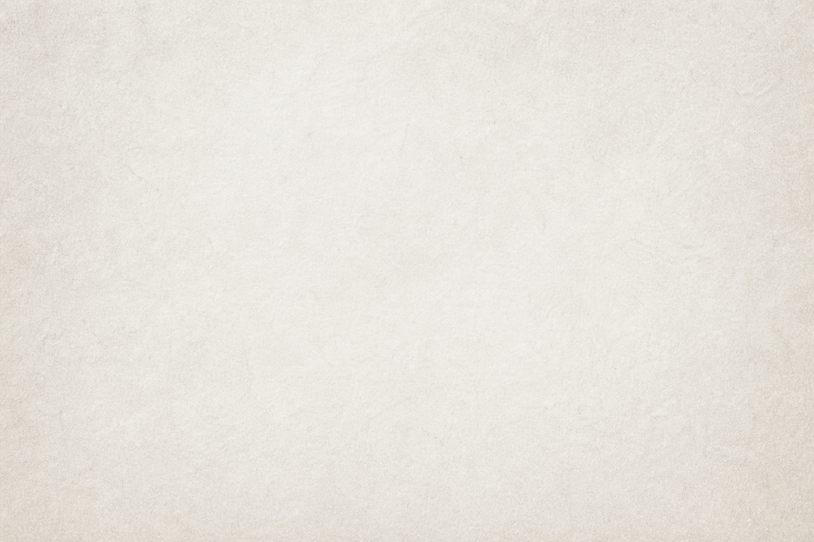

About This Journey
This layout explores how spacing, contrast, and subtle textures create a more immersive reading experience. The goal is to make simple components feel intentional and polished.
Where calm meets ambition
This layout explores how spacing, contrast, and subtle textures create a more immersive reading experience. The goal is to make simple components feel intentional and polished.

This section highlights a key part of your layout using a full-width background image and overlay. Keep content clear and easy to read.